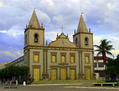

História de Martins
A história de Martins, cidade localizada no alto da Chapada da Borborema, remonta ao período colonial brasileiro. Fundada em 1750, a cidade recebeu o nome em homenagem ao Capitão-Mor Martins Ferreira, um dos primeiros desbravadores da região. No século XVIII, Martins era uma área estratégica para os colonizadores, devido à sua posição elevada e sua importância para a pecuária e o abastecimento de regiões vizinhas.
Com o passar dos anos, Martins tornou-se um importante núcleo urbano do Rio Grande do Norte, consolidando-se como um destino turístico e cultural do estado. A cidade ainda preserva traços históricos em sua arquitetura colonial, com casarões antigos que narram o desenvolvimento de uma das cidades mais antigas do RN.